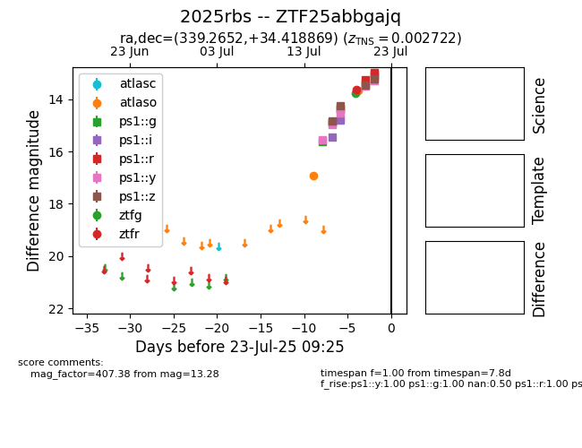

Target 2025rbs at 2025-07-23 12:37, see:
FINK: fink-portal.org/2025rbs
Lasair: lasair-ztf.lsst.ac.uk/objects/2025rbs
ALeRCE: alerce.online/object/2025rbs
TNS: wis-tns.org/object/2025rbs
YSE: ziggy.ucolick.org/yse/transient_detail/2025rbs
alt names
2025rbs (yse,tns)
ZTF25abbgajq (ztf,fink)
coordinates:
equatorial (ra, dec) = (339.2652,+34.41887)
galactic (l, b) = (93.7224,-20.72060)
photometry
last atlaso=13.66, ps1::g=13.07, ps1::i=13.12, ps1::r=12.98, ps1::y=13.28, ps1::z=13.24, ztfg=13.76, ztfr=13.63
2 atlaso, 5 ps1::g, 4 ps1::i, 4 ps1::r, 5 ps1::y, 4 ps1::z, 1 ztfg, 1 ztfr detections
